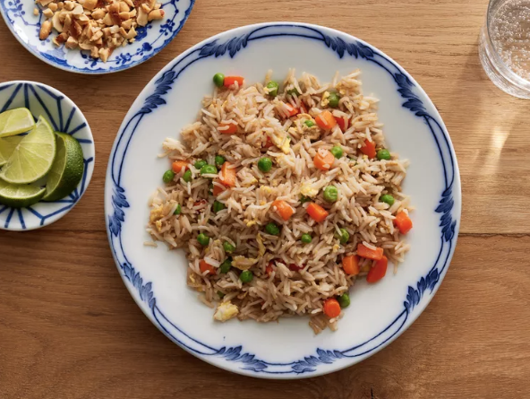

Fried Rice

Description
Simple but yet delicious dish that you won't forget. This is a popular home dish that for many Asian cultures, particularly Chinese. Oftentimes stir fried with scrambled eggs, peas, carrots and your choice of protein. There are endless variations of fried rice found in countless of cultures worldwide.
Ingredients
- 2 cup left-over cooked rice
- 1/2 sliced carrot
- 6 ounces of peas
- 1 pound of finely sliced beef (or any protein of your choice)
- 4 scrambled eggs
- 2 tablespoons of cooking oil
- 2 tablespoons of soy sauce
- 1 tablespoon of oyster sauce
- 2 cloves garlic, minced
Instructions
- Place a large wok or pan on the stove, turn the heat to medium and add in the cooking oil. Wait until the oil reach its smoking point.
- Add the minced garlic to the pan and cook until fragrant.
- Add in the sliced beef and stir fry 2-3 minutes.
- Add vegetables into the pan until softened.
- Season slightly with salt.
- Add the cooked rice to the pan and mix through with the ingredients within the pan.
- Add scrambled eggs over the rice and break apart any pieces.
- Season with soy sauce and oyster sauce, and add in green onions as garnish (optional).
- Enjoy :)